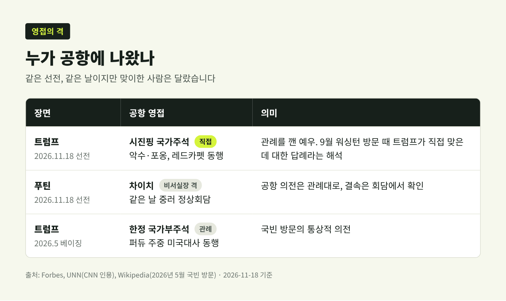
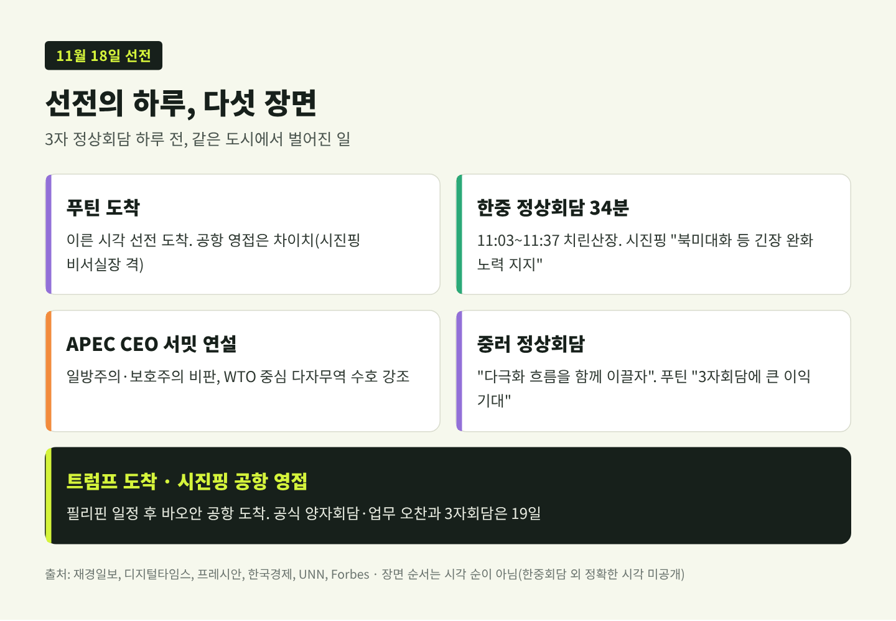
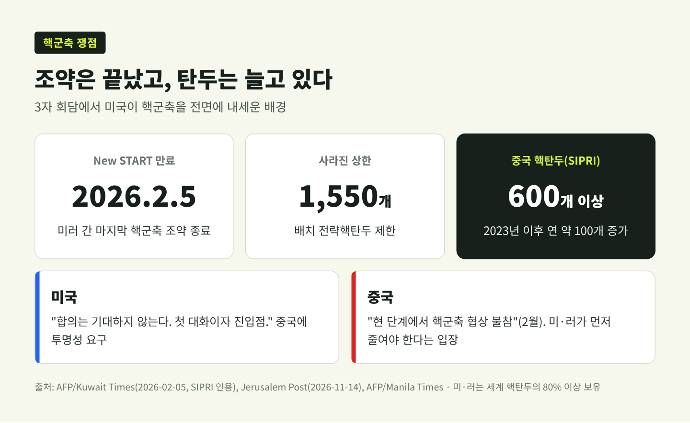
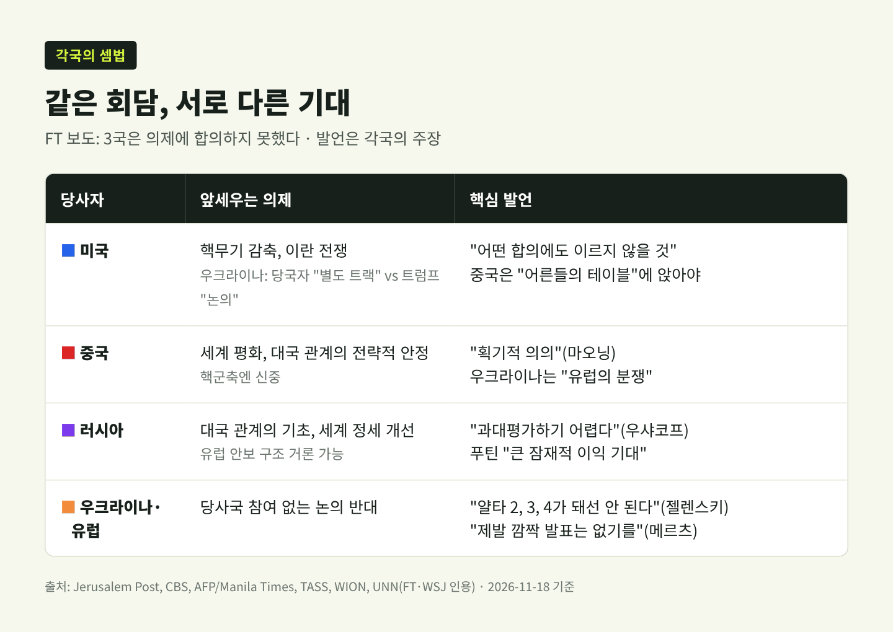
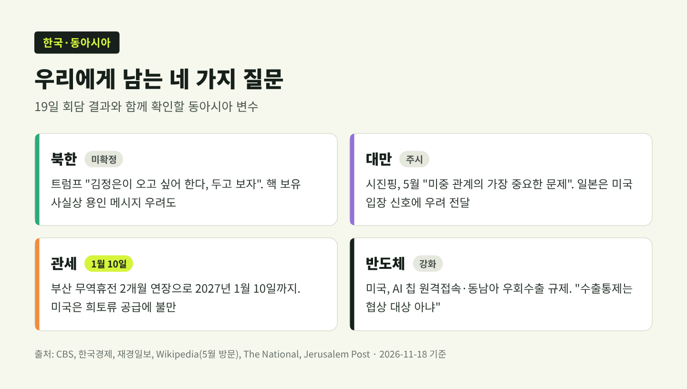

미중러 3자 정상회담 전야, 시진핑이 공항에서 트럼프를 직접 맞았다

3줄 요약
- 트럼프 미국 대통령이 18일(현지시간) 중국 선전에 도착했고, 시진핑 주석이 관례를 깨고 공항 활주로에서 직접 맞았습니다.
- 같은 날 시진핑은 푸틴 러시아 대통령, 이재명 대통령과 잇달아 회담했습니다. 미중러 3자 정상회담은 19일로 잡혀 있습니다.
- 핵군축과 이란은 의제로 확인됐지만, 우크라이나는 당사국마다 말이 다릅니다. 회담 결과는 아직 나오지 않았습니다.
이번 글에서는 선전에서 하루 동안 실제로 벌어진 일과, 19일 열릴 미중러 3자 정상회담의 쟁점을 정리해 보겠습니다. 순방 일정 예고는 앞선 글에서 다뤘으니, 여기서는 도착 이후의 장면과 각국의 셈법에 집중합니다.
■ 무슨 일이 있었나: 활주로에서 시작된 하루
트럼프 대통령은 18일 필리핀 일정을 마치고 선전 바오안 국제공항에 내렸습니다. 에어포스원 계단 아래에서 기다린 사람은 시진핑 국가주석이었습니다.
두 정상은 악수를 나누고 짧게 포옹했습니다. 레드카펫을 함께 걸어 각자의 차량 행렬로 향했고, 양국 국기를 든 어린이들이 주변을 채웠습니다(Forbes, AFP 영상 기반 국제뉴스 보도).
중국에서 국가원수가 공항에 나가 손님을 맞는 일은 드뭅니다. CNN은 시 주석이 국가원수가 된 뒤 미국 대통령을 공항에서 맞은 적이 없다고 전했습니다.
비교해 보면 차이가 선명합니다. 지난 5월 베이징 국빈 방문 때 트럼프를 맞은 사람은 한정 국가부주석이었습니다. 같은 날 먼저 도착한 푸틴 대통령은 시 주석의 비서실장 격인 차이치가 맞았습니다.

이번 영접은 답례 성격이 짙다는 해석이 많습니다. 지난 9월 시 주석이 워싱턴을 국빈 방문했을 때, 트럼프 대통령이 앤드루스 합동기지에서 직접 맞이했기 때문입니다.
다만 이날 두 정상의 공식 회담은 없었습니다. 확인된 범위에서 18일은 '첫 대면'이었고, 양자회담과 업무 오찬은 19일에 열립니다.
■ 같은 날, 시진핑의 바쁜 하루
공항 장면 못지않게 눈여겨볼 대목은 시 주석의 하루 동선입니다.
오전에는 이재명 대통령과 선전 치린산장에서 34분간(11시 3분~37분) 회담했습니다. 두 정상의 세 번째 대면입니다. 이 대통령은 한반도 문제를 "사활적 이익"이라 부르며 중국의 건설적 역할을 요청했습니다. 시 주석은 북미대화를 포함한 긴장 완화 노력을 지지한다고 답했습니다(위성락 국가안보실장 서면브리핑, 프레시안).
APEC 최고경영자(CEO) 서밋 기조연설에서는 일방주의와 보호주의를 비판했습니다. "개방은 진보를 가져오고 폐쇄는 낙후를 부른다"는 말과 함께 WTO 중심의 다자무역을 강조했습니다. 한국경제는 이를 트럼프 행정부의 관세 정책을 겨냥한 발언으로 풀이했습니다.
푸틴 대통령과도 따로 만났습니다. 시 주석은 중러 관계가 세계 변화 속에서 "안정성과 확실성"을 제공한다며 다극화 흐름을 함께 이끌자고 했습니다. 푸틴은 양국 교역이 사상 최대를 기록했다고 화답했고, 3자 회담에 대해서는 "큰 잠재적 이익을 기대한다"고 말했습니다.

정리하면 시 주석은 하루 사이에 미국을 극진히 예우하고, 러시아와 결속을 확인하고, 자유무역의 수호자를 자처했습니다. 19일 회담장의 주인이 누구인지를 미리 보여준 하루였던 셈입니다.
■ 왜 중요한가: 처음 마주 앉는 세 핵강국
19일 회담은 미국·중국·러시아 정상이 처음으로 한 테이블에 앉는 자리입니다. 크렘린, 백악관, 중국 외교부가 차례로 확인했습니다. 순서는 오전 APEC 다자회의, 트럼프-시진핑 양자회담과 업무 오찬, 그리고 3자 회담입니다(Jerusalem Post).
예전엔 미러, 미중이 각자의 테이블에서 따로 협상했습니다. 지금은 세 나라가 같은 방에 모입니다. 형식 자체가 메시지라는 평가가 나오는 이유입니다.
시기도 공교롭습니다. 미러 간 마지막 핵군축 조약인 New START는 올해 2월 5일 만료됐습니다. 배치 전략핵탄두를 1,550개로 묶던 장치가 사라진 상태입니다. 그 사이 중국의 핵탄두는 최소 600개로, 2023년 이후 해마다 약 100개씩 늘었다는 것이 스톡홀름국제평화연구소(SIPRI)의 추정입니다.

■ 쟁점과 이해관계: 같은 회담, 서로 다른 기대
세 나라는 같은 회담에 서로 다른 것을 기대하고 있습니다. 파이낸셜타임스는 3국이 의제에 합의하지 못했다고 보도했습니다.
미국 — 핵군축과 이란 백악관은 핵무기 감축을 전면에 내세웠습니다. 다만 고위 당국자는 "어떤 합의에도 이르지 않을 것"이라며 이번을 "첫 대화"로 규정했습니다. 중국을 향해서는 투명성 없이 핵무기를 늘려 왔다며 이제 "어른들의 테이블"에 앉으라고 했습니다. 이란 전쟁도 꺼낼 계획입니다.
중국 — 포괄적 의제, 군축엔 신중 마오닝 외교부 대변인은 "세계 평화와 대국 관계의 전략적 안정"을 논의한다고만 밝혔습니다. 중국은 미·러가 먼저 줄여야 한다는 입장을 오래 지켜 왔습니다. 2월에도 "현 단계에서 핵군축 협상에 참여하지 않는다"고 했습니다.
러시아 — 대국 관계의 틀 우샤코프 크렘린 보좌관은 의제를 "대국 관계의 기초"와 "세계 정세 개선"으로 소개했습니다. 유럽 안보 구조도 거론될 수 있다고 했습니다. 이 형식이 2차대전 당시 연합국의 이해를 떠올리게 한다고도 말했습니다. 월스트리트저널은 푸틴이 러시아에 유리한 조건의 우크라이나 종전 논의를 원한다고 보도했습니다.
우크라이나·유럽 — "우리 없이 우리 얘기는 안 된다" 젤렌스키 대통령은 세 나라가 만날 권리는 있지만, 우크라이나의 미래를 논한다면 당사국이 있어야 한다고 했습니다. 회담이 "얄타 2, 3, 4"가 되어선 안 된다는 경고도 덧붙였습니다. 메르츠 독일 총리는 "제발 깜짝 발표는 없기를"이라고 당부했고, EU 집행위원회는 우크라이나와 유럽의 완전한 참여를 요구했습니다.

가장 엇갈리는 지점은 우크라이나입니다. 미 당국자들은 우크라이나가 러시아와의 별도 트랙이며 3자 의제가 아니라고 했습니다. 그런데 트럼프 대통령은 출국하며 비핵화, 이란과 함께 우크라이나도 이야기하겠다고 말했습니다. 흥미롭게도 중국 역시 소극적입니다. 슈타인마이어 독일 대통령에 따르면 시 주석은 이 문제를 "유럽의 분쟁"으로 보고 유럽도 테이블에 있어야 한다고 했습니다.
무역도 테이블 밖에 있지 않습니다. 부산 무역휴전은 9월에 두 달 연장돼 내년 1월 10일까지 유지됩니다. 미국은 6개월을 원했지만 두 달에 그쳤습니다. 미국은 희토류가 기대한 "속도와 수준"으로 들어오지 않는다고 불만입니다. 중국은 세계 자석용 희토류 채굴의 60%, 정제의 91%를 차지합니다(IEA). 반도체도 마찬가지입니다. 미 상무부는 회담 직전 첨단 AI 칩에 대한 중국의 원격 접속을 막고 동남아 우회 수출을 규제하기로 했습니다. 백악관 당국자는 "수출통제는 협상하지 않는다"고 선을 그었습니다.
■ 한국과 동아시아에 남는 질문
동아시아의 관심은 크게 네 갈래입니다.
첫째, 북한입니다. 트럼프 대통령은 김정은 위원장이 "오고 싶어 한다"며 "어떻게 될지 보자"고 했습니다. 크렘린도 김 위원장이 오면 푸틴과 만날 수 있다고 했습니다. 국내에서는 북한의 핵 보유를 사실상 용인하는 메시지가 나올 수 있다는 우려가 제기됩니다(한국경제). 아직 김 위원장의 방중은 확인되지 않았습니다.
둘째, 대만입니다. 시 주석은 5월 회담에서 대만을 미중 관계의 "가장 중요한 문제"로 꼽았습니다. 일본은 이번 회담이 대만과 아시아에 대한 미국의 입장으로 어떻게 읽힐지 우려를 미국에 비공개로 전했다고 합니다(재경일보).
셋째, 관세입니다. 휴전 만료일인 1월 10일 전에 더 큰 합의로 갈지, 또 한 번의 단기 연장에 그칠지가 관건입니다. 미 당국자들은 이번 회담 직후 새 관세 합의는 기대하지 않는다고 했습니다.
넷째, 반도체 수출통제입니다. 미국이 통제 강화 기조를 분명히 한 만큼, 중국의 대응 수위가 공급망 전반의 변수가 됩니다. 로이터는 중국이 보복을 예고했다고 전했습니다.

평가는 엇갈립니다. 커트 캠벨 전 국무부 부장관은 이번 회담의 주된 결과가 '스트롱맨 세 사람'이 나란히 선 이미지일 수 있으며, 미국 동맹에 득이 되기 어렵다고 봤습니다. 반대로 세 핵강국이 군축 대화를 처음 시작한다는 점에 의미를 두는 시각도 있습니다. 미국은 이를 "진입점"이라 부르고, 중국은 "획기적 의의"를, 러시아는 "과대평가하기 어려운" 의미를 강조합니다.
■ 앞으로 전망: 19일에 확인할 것들
19일 회담에서 지켜볼 대목은 다음과 같습니다.
- 핵군축: 3국이 후속 협의 채널이라도 만들지, 중국이 어떤 조건을 내걸지
- 우크라이나: 실제로 논의됐는지, 됐다면 어떤 표현으로 공개되는지
- 무역: 트럼프-시진핑 양자회담에서 1월 10일 휴전 만료 이후의 방향이 나오는지
- 한반도: 김정은 위원장의 방중이나 북미 접촉 신호가 있는지
- 형식: 공동 발표가 있을지, 트럼프-푸틴 별도 회동이 성사될지
현재로서는 어느 것도 확정되지 않았습니다. 미국 스스로 합의를 기대하지 않는다고 밝힌 만큼, 첫 회담의 성과는 문서보다 분위기와 후속 일정으로 가늠하게 될 가능성이 큽니다.
정리하면 이렇습니다. 18일의 선전은 한 장면으로 요약됩니다. 활주로에서 트럼프를 맞은 시진핑, 그리고 같은 날 푸틴과 손을 맞잡은 시진핑입니다.
스콧 케네디 미 전략국제문제연구소(CSIS) 연구원의 말처럼 "상징성 자체가 메시지"인 회담입니다. 다만 그 방에 빠진 사람들, 곧 우크라이나와 유럽, 그리고 한반도와 대만을 둘러싼 이웃들의 목소리가 어떻게 반영될지는 19일 이후에야 보일 것입니다.
결과가 나오는 대로 이어서 정리하겠습니다. 회담이 얄타의 재현이 될지, 군축의 첫걸음이 될지 묻는다면, 지금은 그 답을 서두르지 않는 편이 정직하다고 생각합니다.
참고 출처
- CNBC, "Trump lands in China for historic meeting with Xi, Putin" (2026-11-18) — https://www.cnbc.com/2026/11/18/trump-xi-putin-china-apec.html
- CNN, "APEC summit latest: Xi breaks precedent by meeting Trump on arrival in China" (2026-11-17~18) — https://edition.cnn.com/2026/11/17/politics/live-news/trump-visit-china-philippines
- Forbes(Yahoo News 게재), "Trump Arrives In China—Xi Greets Him On Tarmac" (2026-11-18) — https://www.yahoo.com/news/politics/articles/trump-arrives-china-xi-greets-103506680.html
- CBS News, "Trump in China for summit with Putin and Xi" (2026-11-17) — https://www.cbsnews.com/news/trump-asia-trip-trilateral-summit-putin-xi/
- The Jerusalem Post, "White House confirms Trump-Xi-Putin trilateral summit in China" (2026-11-14) — https://www.jpost.com/international/article-914839
- AFP/The Manila Times, "China confirms Xi-Trump-Putin summit" (2026-11-17) — https://www.manilatimes.net/2026/11/17/world/asia-oceania/china-confirms-xi-trump-putin-summit/2470833
- Ukrainska Pravda, "China confirms 19 November date for Xi-Trump-Putin trilateral summit" (2026-11-16) — https://www.pravda.com.ua/eng/news/2026/11/16/8063010/
- TASS, "Leaders of Russia, China, US to discuss ways of improving global situation" (2026-11-18) — https://tass.com/politics/2220403
- WION, "Trump, Xi and Putin set for historic talks… why Europe fears 'Yalta 2.0'" (2026-11-17) — https://www.wionews.com/world/trump-xi-and-putin-set-for-historic-talks-what-china-russia-and-us-said-and-why-europe-fears-yalta-2-0-1794852640832
- UNN, "Xi Jinping personally met Trump in China; he did not meet Putin" (2026-11-18) — https://unn.ua/en/news/xi-jinping-personally-met-trump-in-china-he-did-not-meet-putin
- UNN, "Putin met with Xi and outlined his expectations for the trilateral summit" (2026-11-18) — https://unn.ua/en/news/putin-met-with-xi-and-outlined-expectations-for-a-trilateral-summit-with-trump
- The National, "China extends pause on rare earth export curbs for two months" (2026-11-09) — https://www.thenationalnews.com/news/us/2026/11/09/china-extends-pause-on-rare-earth-export-curbs-for-two-months/
- AFP/Kuwait Times, "China shuns calls to enter nuclear talks after US-Russia treaty lapses" (2026-02-05) — https://kuwaittimes.com/article/39457/top-stories/china-shuns-calls-to-enter-nuclear-talks-after-us-russia-treaty-lapses/amp
- Wikipedia, "2026 state visit by Donald Trump to China" — https://en.wikipedia.org/wiki/2026_state_visit_by_Donald_Trump_to_China
- Wikipedia, "APEC China 2026" — https://en.wikipedia.org/wiki/APEC_China_2026
- 한국경제, "트럼프-시진핑, 반도체·희토류 해법 나올까" (2026-11-18) — https://www.hankyung.com/article/2026111856131
- 프레시안, "李대통령, 시진핑과 정상회담…習 '북미대화 지지'" (2026-11-18) — https://www.pressian.com/pages/articles/2026111817140075606
- 디지털타임스, "李대통령·시진핑, 선전서 34분 회담" (2026-11-18) — https://www.dt.co.kr/article/12095951
- 재경일보, "트럼프·시진핑·푸틴 첫 회담…동맹국 긴장 키우는 '강대국 무대'" (2026-11-18) — https://news.jkn.co.kr/post/1102828
- 재경일보, "시진핑·푸틴 선전 회동…미중러 정상회담 앞두고 밀착 과시" (2026-11-18) — https://news.jkn.co.kr/post/1105445
- 국제뉴스, "[속보] 시진핑, 선전 공항서 트럼프 대통령 직접 영접" (2026-11-18) — https://www.gukjenews.com/news/articleView.html?idxno=3756260
- 투데이코리아, "美는 반도체 통제, 中은 개방 강조" (2026-11-18) — https://www.todaykorea.co.kr/news/articleView.html?idxno=408795